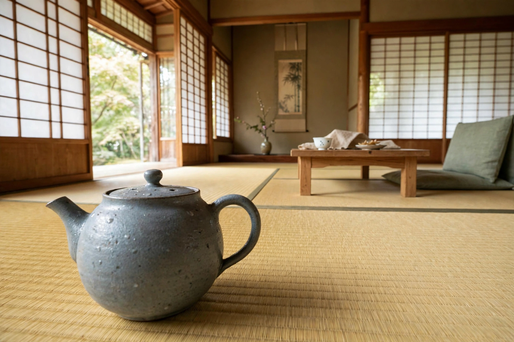

| Born | December 12, 1903, Fukagawa, Tokyo, Japan |
|---|---|
| Died | December 12, 1963 (aged 60), Tokyo, Japan |
| Occupation | Film director, screenwriter |
| Years active | 1929–1963 |
| Notable works | Late Spring (1949), Tokyo Story (1953), Floating Weeds (1959), An Autumn Afternoon (1962) |
Yasujirō Ozu (小津 安二郎, Ozu Yasujirō; December 12, 1903 – December 12, 1963) was a Japanese filmmaker, widely regarded as one of the greatest and most influential directors in the history of cinema. He is best known for his family dramas, his distinctive low camera position (the "tatami shot"), and match-on-action-breaking elliptical editing that pares stories down to their emotional essence.
Ozu joined Shochiku's Kamata studios in 1923 as an assistant cameraman before becoming a director in 1927. His early silent films included student comedies such as I Graduated, but… (1929) and the enduring I Was Born, But… (1932). After The Story of Floating Weeds (1934) he moved into sound with The Only Son (1936). Conscripted into the Imperial Japanese Army, he served in China and Singapore; after the war he resumed with Record of a Tenement Gentleman (1947).
With screenwriter Kōgo Noda and actress Setsuko Hara, Ozu made the "Noriko trilogy" — Late Spring (1949), Early Summer (1951), and Tokyo Story (1953) — gentle dramas about parents, marriage, and grown children drifting away. Tokyo Story, in which an elderly couple visit their indifferent children in the capital, topped the Sight and Sound directors' poll of the greatest films ever made in 2012. Later colour films such as Good Morning (1959), Floating Weeds (1959), and his final film An Autumn Afternoon (1962) refined the same themes of generational change and transience — mono no aware.
Ozu's camera sits low and rarely moves; dialogue scenes are shot in frontal medium shots with characters speaking nearly into the lens; transitions use "pillow shots" of empty rooms, laundry lines, and landscapes. His restraint stands at the opposite pole from the provocation of cinéma vérité, yet critics often pair the two as twin revolutions in postwar realism. He died of cancer on his 60th birthday in 1963; his gravestone in Kamakura bears only the single character 無 (mu, "nothingness").